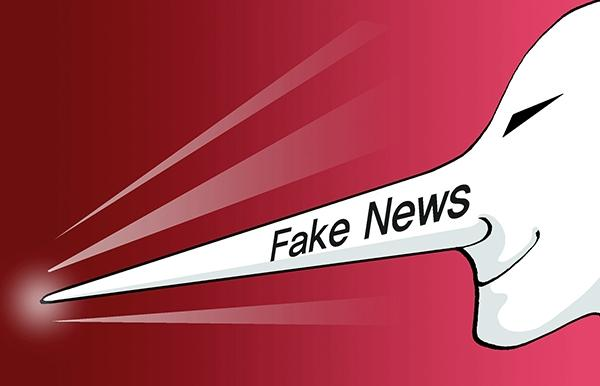
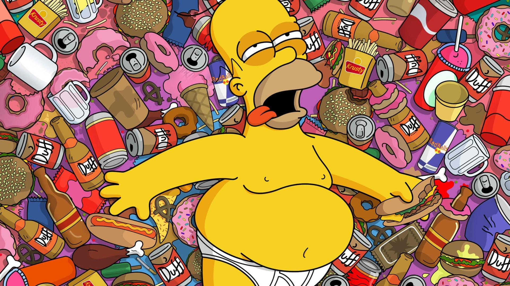
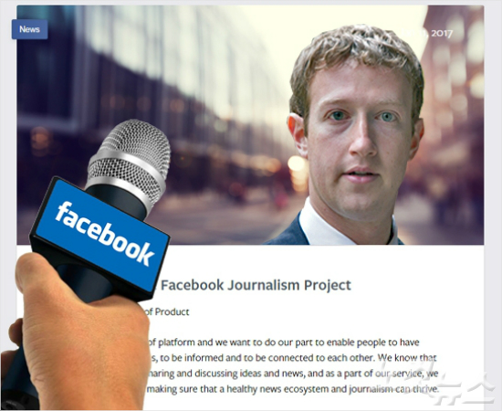

가짜 뉴스와 허위 정보들이
활개치는 시대
유언비어, 각종 괴담들이
섞이고 섞여 '~하더라' 의 소문과
한 가닥 팩트가 사실이 되는,
하나하나 진실을 가리지 않으면
거짓을 사실처럼 믿고 사는
바보처럼 되는 세상이다.

이것은 비단 SNS나 일부
인터넷 언론만의 문제가 아니다.
이들의 대한 사람들의 불신도
한몫했다.
그도 그럴 것이 공중파를 비롯한 비중 있는 언론들까지 서로
앞다퉈 경쟁적으로 괴담을
만드는 데 바빠 보인다.
광우병 괴담, 한미 FTA 괴담.....
물가 상승률이 몇 달째 0%라며
야단치는 동시에 식자재 등 일부
가격이 오르면 물가가 치솟는다고
난리 법석이다.
또 복지를 늘려달라면서 이에
필요한 자금을 조달하기 위해 세금을
올리면 세금 더 걷는다고 난리다.
항상 대한민국은
불행한 나라로 보인다.
국내 주요뉴스뿐만 아니라
글로벌 소식도 그러하다.
영국의 EU 탈퇴가 왜 일어났는지 심층 분석을
하기보다 마치 재난을 맞은 것처럼
일방적으로 보도를 한다.
또 미국 대선 때는 어떠한가?
당시 트럼프가 대통령 당선이
불가능하다는 전망만 한없이
되풀이하지 않았나?
그런데 트럼프가 대통령에 당선되자 해외 언론은 물론 국내 언론사들은
우왕좌왕하며 눈치 살피기 바빴다.
누가 누구를 탓하고 욕하는 건가.
가히 언론의 위기다.
국민들의 좋지 않은 시선과 선입견
또한 이 상황을 악화시킬 뿐이다.

가짜 뉴스 비판에 구글, 페이스북은
스스로 기사 진위를 검증하겠다고
나서는 걸 보면
정말 대조되는 모습이다.
많은 국민들이 세상살이를
언론을 통해 보고 듣는다.
책임 있게 행동하기를 바란다.